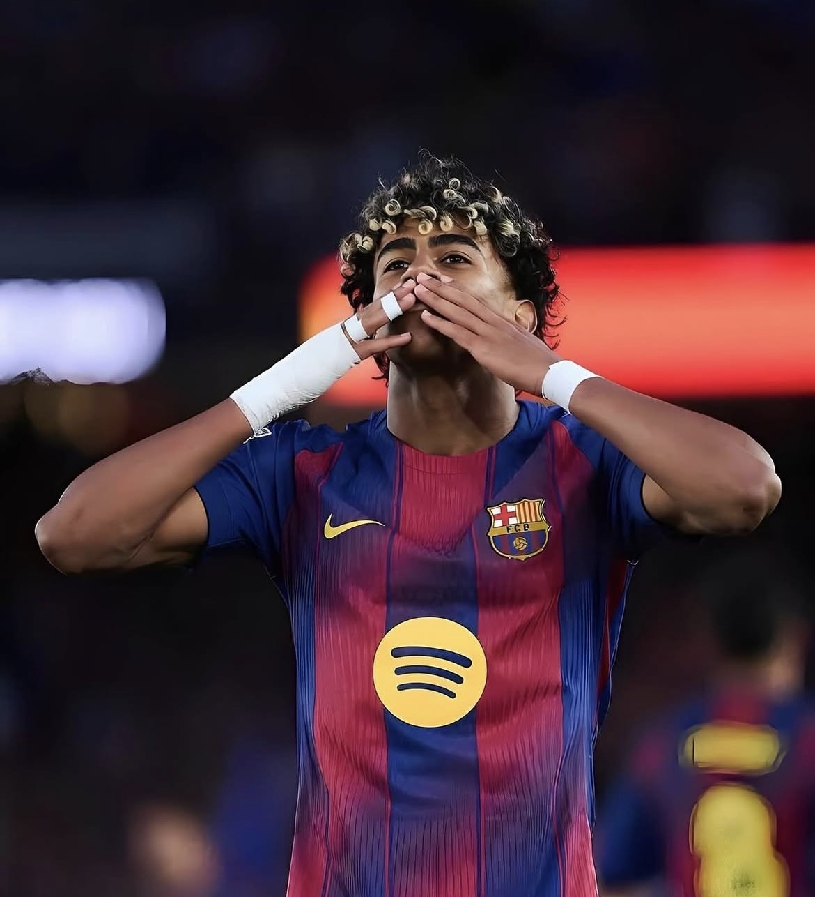
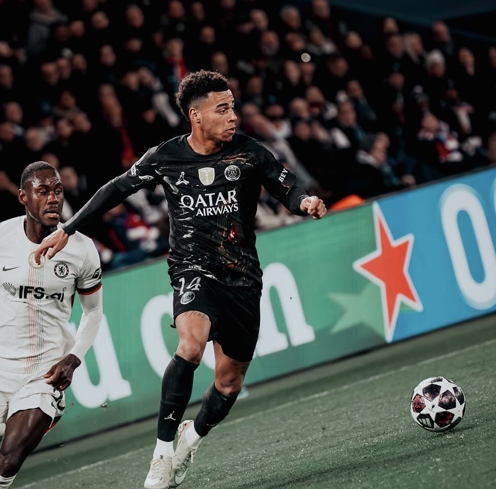
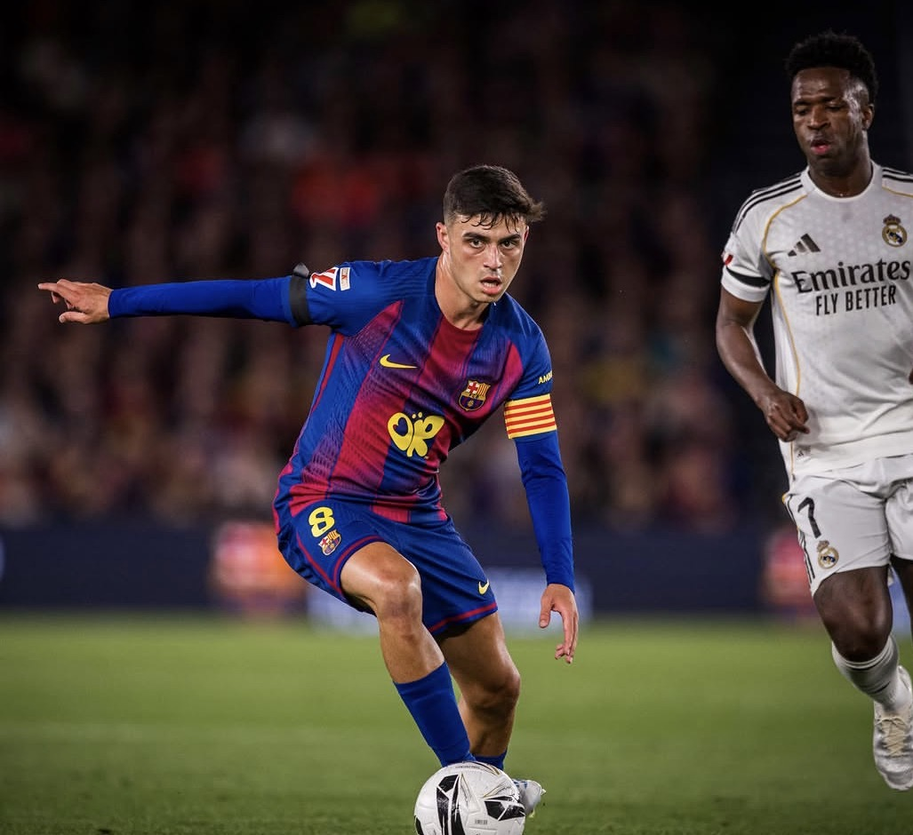

WGLamine Yamal
所属: Barcelona
バルセロナ所属のスペイン代表FW。異次元のテクニックから繰り出される右サイドからのカットインと、天才的なチャンスメイクで攻撃を牽引する。若くして世界中を魅了し、新時代を担う最注目の至宝アタッカー。
次世代を担うPLの至宝たち
世界中のスカウトが熱視線を送る23歳以下注目のPL以外のヤングスター3選

WG所属: Barcelona
バルセロナ所属のスペイン代表FW。異次元のテクニックから繰り出される右サイドからのカットインと、天才的なチャンスメイクで攻撃を牽引する。若くして世界中を魅了し、新時代を担う最注目の至宝アタッカー。

WG所属: PSG
PSGに所属するフランス代表MF。圧倒的なキレを誇るドリブルと高い創造性を武器に、攻撃陣の複数位置をこなす天才アタッカー。名門の主力としてCLの舞台でも輝きを放ち、世界を魅了する次世代の至宝。

CM所属: Barcelona
バルセロナに所属するスペイン代表MF。異次元のサッカーIQと至高のテクニックを兼ね備え、かつての名手イニエスタを彷彿とさせる天才司令塔。攻守のタクトを振り、チームを勝利へと導く絶対的な中盤の至宝。